⚠️ 机票、酒店均未预订 · 路线怎么定的见「规划逻辑」
Day 1 飞亚庇1.23 周六
Day 2 亚庇1.24 周日
Day 3 海岛1.25 周一
Day 4 飞吉隆坡1.26 周二
Day 5 KLCC1.27 周三
Day 6 返程1.28 周四
备选景点可替换
17:30 起飞（推荐） · 约 4h15m
上海浦东 → 亚庇PVG → BKI · Kota Kinabalu
马来西亚与北京时间没有时差（UTC+8）。上海到亚庇有直飞，比飞吉隆坡少 1 个多小时。推荐选傍晚出发、21:45 左右到达的航班，到酒店后直接睡觉；凌晨 4 点出发的红眼航班带 3 岁孩子太累，不推荐。
✈️ 上海浦东 → 亚庇 直飞（未预订 · 参考）
携程国际机票时刻表（2026 年 10 月查询）列出的 PVG→BKI 直飞：上海航空 FM7223 17:30→21:45、上海航空 FM867 19:50→次日 00:30；东方航空 MU8325 / MU8621 时刻与这两班相同（可能是代码共享，待确认）；春秋航空 9C8593 21:10→次日 01:20；亚航 AK1517 04:05→08:45。Roame 航线数据也显示 9C / AK / FM / MU 四家航司在 2026-09 到 2027-09 的班期里都有这条航线。
春秋航空：据《东方日报》2026-09-23 报道，沙巴旅游部长宣布春秋 12 月起把上海—亚庇加到每日两班。
⚠️ 2027 年 1 月的具体班期、时刻和票价：价格待查，以订票时为准。跳跳满 2 岁需单独占座买儿童票。
推荐：FM7223（或同时刻的 MU 航班）17:30→21:45，到酒店约 22:30。
落地 · 30–60min
入境 · 出示 MDACImmigration · BKI
持中国普通护照（有效期≥6个月）免签入境，单次停留≤30天（中马互免签证协定，2025-07-17 生效）。每人（包括跳跳）都要在抵达前 3 天内在官网 imigresen-online.imi.gov.my 免费填 MDAC。沙巴的出入境由州政府自己管理，护照上会盖沙巴的入境章，看清上面写的停留期限（sabahguide.com）。
免签 30 天MDAC ×3 人
💡 只用官网填 MDAC。机场有换汇和电话卡柜台，换少量林吉特即可；Grab 在亚庇可以用。
约 22:30 · —
入住丹绒亚路香格里拉（推荐）Shangri-La Tanjung Aru, Kota Kinabalu
Shangri-La Tanjung Aru, 20 Jalan Aru, Kota Kinabalu · 地图
首选丹绒亚路香格里拉（STAR）：在丹绒亚路海边，离机场很近（车程约 10–15 分钟，参考），深夜落地不用折腾。官网“For Kids”页面写有 Cool Zone 儿童俱乐部（9:00–19:00）、儿童/家庭泳池和带滑梯的戏水区。官网另有“第二期翻新”通告，说儿童设施会照常开放，1 月实际情况待确认。备选沙巴莎利雅香格里拉（Rasa Ria）：在北边的海滩，环境更“野”，但离市区和机场远（约 40–60 分钟，参考），见备选景点。
推荐（未预订）· 价格待查旅游税 RM10/间/晚
💡 落地时已经很晚，在机场就给跳跳换好睡衣，上车就能睡。
08:30 · 2h
加雅街周日集市Gaya Street Sunday Market
Jalan Gaya, Kota Kinabalu · 地图
每周日整条加雅街封路变成集市：沙巴手工艺品、串珠、竹编、热带水果、当地小吃、花草、小动物都有。沙巴旅游局写的是 6:00–13:00，也有资料写 5:00–12:45（待确认），总之上午去。今天是 1/24 周日，正好赶上。
🕖 最佳时间/光线：8:00–10:00，光线柔和，还不太热。
📐 机位构图：站在街边台阶上往下拍，把一排排彩色遮阳棚和人流拍成纵深；近拍水果摊和手工艺品的色彩。
👶 带娃：拍摊主前先问一声；牵好孩子，别让他摸小动物摊。
💡 人很多，推车不好走，用背带；带点现金买小吃和水果。
10:30 · 1h
老街吃早午餐Kopitiam near Gaya Street
加雅街周边有很多老茶室：海南咖啡、炒面、海鲜面。亚庇有名的“生肉面”是猪肉面（非清真）。给跳跳点不辣的汤面或炒饭。
老茶室不要辣 = No chili
12:00 · 2.5h
回酒店午睡Nap time
回酒店午睡，避开中午最晒的时候。
午睡
15:30 · 2h
酒店戏水区 / 海滩玩沙Resort pool & beach
在酒店的儿童戏水区或海滩玩沙。1 月是亚庇雨季的尾巴，下午可能有雷阵雨（见避雷指南），下雨就去儿童俱乐部。
酒店内防晒 + 驱蚊
17:45 · 1h
丹绒亚路海滩日落Tanjung Aru Beach Sunset
Tanjung Aru Beach, Kota Kinabalu · 地图
亚庇最有名的看日落地方，就在酒店旁边。1 月亚庇日落约 18:20（按公式估算，参考）。晚饭可以在海滩边的小吃摊或酒店吃。
🕖 最佳时间/光线：日落前 20 分钟到日落后 15 分钟；云多的晚上颜色更浓。
📐 机位构图：逆光拍剪影：让孩子站在水边，蹲低把海平线放在画面下三分之一；远处的小岛能让画面更有层次。
👶 带娃：沙滩平缓，水边牵好手；傍晚蚊子多。
💡 傍晚这一带容易堵车，离开时提前叫车（journey.tw）；住 STAR 的话走路就到。
13:00–22:00 · 约 8–9h
（可选）克里亚斯河：长鼻猴 + 萤火虫Klias River Cruise
婆罗洲特有的长鼻猴和河边的萤火虫，是亚庇最有名的半日游。旅行社一般 13:00–14:00 到酒店接，开车约 2 小时到 Klias，16:00–17:00 坐船看猴子，晚饭后 19:00 左右看萤火虫，约 21:30–22:30 回到酒店（Amazing Borneo、Sabah Holidays 等旅行社行程）。儿童价一般 3–11 岁；价格各家不同（如 RM195 起，待确认）。
精力好再选替代下午和日落
💡 选它就放弃今天的午睡（跳跳在车上睡）和海边日落。全程 8 个多小时、晚上 22 点左右才回，带 3 岁孩子偏累；包车要问清能否装儿童座椅。看不到动物不退款（旅行社说明）。
08:00 · 30min
到 Jesselton Point 码头Jesselton Point Ferry Terminal (South Jetty)
Jesselton Point (South Jetty), Kota Kinabalu · 地图
去海岛的船从 Jesselton Point 出发。注意：码头 2026 年 3 月 1 日起搬到 Jesselton Quay 后面的 South Jetty，叫车时要说清楚，不然要多走约 400 米（MySabah.com）。在柜台买往返船票，另付海洋公园环保费（见下一项）。
Grab 约 15–20 分钟（参考）带护照
08:30 · 约 4h
马奴干岛（Manukan）玩沙戏水Manukan Island · Tunku Abdul Rahman Park
Pulau Manukan, Tunku Abdul Rahman Park · 地图
东姑阿都拉曼海洋公园离市区只要 15–20 分钟快艇，有沙比岛（Sapi）、马奴干岛（Manukan）、马穆迪岛（Mamutik）等。带 3 岁孩子推荐马奴干岛：岛比较大，餐厅、厕所等设施较全（待确认），沙滩适合玩沙踩水。
环保费（沙巴公园官网）：国际游客 18 岁以上 RM25/人/天、17 岁以下 RM20，只能刷卡或电子钱包（不收现金，MySabah.com）。船票：各来源差别很大（RM35/人起到 RM95 成人、RM65 儿童，3 岁以下免费），价格待确认。最后一班回程船约 16:00（Jesselton Point 官网）。
🕖 最佳时间/光线：上午 9:00–11:00，海水颜色最透。
📐 机位构图：站在码头栈桥上往下拍浅水区的鱼和清澈海水；沙滩上低角度拍孩子玩沙，把蓝色海水和远处的亚庇市区放在背景。
👶 带娃：全程穿儿童救生衣，船上抱紧；岛上有巨蜥和猴子，不要喂食，看好食物。
💡 ⚠️ 1 月是东北季风的尾巴，海况不稳，风浪大时船会停开（有博客说大约每 4 天有 1 天停，待确认）。上午海面通常比较平静，所以安排在上午。如果停航，就改成酒店泳池 + 海滩，下午去手工艺市场。
12:30 · 1h
回城午餐Jesselton Quay / KK Waterfront
回到码头后在 Jesselton Quay 或海滨一带吃午饭，然后回酒店。
午餐
13:30 · 2h
回酒店午睡Nap time
海岛玩完会很累，好好睡一觉。
午睡
16:30 · 1h
菲律宾手工艺市场Filipino Market / Handicraft Market
Jalan Tun Fuad Stephens, Kota Kinabalu · 地图
海边的手工艺市场，卖珍珠、贝壳工艺品、沙巴手信等，可以砍价。旁边傍晚有卖烧烤海鲜的夜市，烟大、人多、地滑，带娃逛一圈就好。营业时间待确认。
手信可砍价
17:45 · 1.5h
海滨步道日落 + 晚餐KK Waterfront
KK Waterfront, Kota Kinabalu · 地图
市中心海滨步道有一排餐厅和酒吧，面朝大海看日落（约 18:20），晚饭在这里吃海鲜或西餐。
🕖 最佳时间/光线：日落前后 30 分钟。
📐 机位构图：沿着步道的栏杆斜着拍，用海边的船和远处的岛做前景。
👶 带娃：步道靠海的地方有的没有护栏，牵好孩子。
07:45 · 1h
亚庇水上清真寺Kota Kinabalu City Mosque · Likas
Masjid Bandaraya Kota Kinabalu, Jalan Pasir, Likas · 地图
建在人工湖上的蓝顶清真寺，水面平静时像“漂浮”在湖上，是亚庇最有名的拍照点。沙巴旅游局写的游客参观时间：8:00–12:00、14:00–15:30、16:00–17:00，周五不开放，外国游客入场约 RM5，进寺需穿长袍（可借/租）。今天周二可以进。只在外面拍照不用进寺。
🕖 最佳时间/光线：早上没风时湖面最平，倒影最清楚；也有博客推荐傍晚拍晚霞和倒影（今天傍晚已经在吉隆坡，所以选早上）。
📐 机位构图：站在清真寺前的湖边，把手机放低贴近水面，让清真寺和倒影上下对称（journey.tw）。
👶 带娃：湖边有的地方没有栏杆，牵好孩子；进寺要脱鞋，跳跳也要穿长袖长裤。
💡 从丹绒亚路过去约 20 分钟车程（参考）。拍完回酒店退房，不要拖到中午。
09:30 · 1h
回酒店退房Check-out
早餐后退房，去机场。
退房
约 12:00–14:00 · 约 2h30m
亚庇 → 吉隆坡BKI → KUL
国内航班，但离开沙巴时也要过边检查护照（马来西亚移民局国内旅行说明）。先确认航班在 KLIA T1（马航 / Batik）还是 T2（亚航）落地。
✈️ 亚庇 → 吉隆坡 国内航班（未预订 · 参考）
直飞航司：马来西亚航空 MH、亚航 AirAsia、Batik Air (OD)、Firefly (FY) 等（Roame 航线数据，2026-09 至 2027-09 班期），飞行约 2 小时 30 分（sabahguide.com）。
具体时刻与票价：价格待查。建议选 12:00–14:00 起飞的航班，上午不用赶，跳跳可以在飞机上午睡。
约 17:00 · —
入住 KLCC 区域酒店Hotel near KLCC Park
候选：Traders Hotel Kuala Lumpur / Mandarin Oriental Kuala Lumpur / Grand Hyatt Kuala Lumpur · 地图
住 KLCC 附近，双子塔、KLCC 公园戏水池、水族馆都能步行或推车到达，D5 不用坐车。选房时问清：可否加婴儿床/儿童床、是否有浴缸、泳池是否有儿童区。
推荐（未预订）· 价格待查旅游税 RM10/间/晚
19:00 · 1h
晚餐 + 双子塔夜景Suria KLCC · Lake Symphony
Suria KLCC, Kuala Lumpur City Centre · 地图
双子塔脚下的 Suria KLCC 商场有美食广场和大量中餐/连锁餐厅，冷气足、有母婴室，到吉隆坡第一晚不用折腾。饭后走到商场后门的 KLCC 公园湖边拍照（见下一项）。
商场美食广场双子塔夜景
💡 室内冷气很足，给跳跳带一件薄长袖外套。
20:00 · 30–45min
KLCC 公园湖边双子塔机位KLCC Park · Lake Symphony
KLCC Park 湖边步道（Suria KLCC 后门 Esplanade） · 地图
双子塔亮灯后，从 Suria KLCC 后门出来就是湖边平台，是拍双子塔全景最省力的位置。湖上的 Lake Symphony 音乐喷泉据小红书和同程旅行攻略为每晚 20:00 / 21:00 / 22:00 左右开演（场次待确认，以现场公告为准）。
🕖 最佳时间/光线：晚上亮灯后到 20:00 第一场喷泉之间；想拍湖面倒影，小红书笔记推荐早上 9 点前湖面最平静（D5 上午去戏水池时可以顺路补拍）。
📐 机位构图：湖边平台竖构图，把整栋双子塔和喷泉都框进来，手机用 0.5x 广角。同程攻略提到，从 Menara Public Bank 附近的路中安全岛可以拍到没有遮挡的全景（过马路注意车，带娃不建议）。
👶 带娃：湖边步道平坦，推车可以走；喷泉前人多，抱起来看。今天坐了飞机，跳跳累了就只看一场。
10:00 · 1.5h
KLCC 公园儿童戏水池 + 游乐场KLCC Park Wading Pool
KLCC Park, Jalan Ampang, Kuala Lumpur · 地图
双子塔脚下的城市公园，有免费儿童戏水池和大型游乐场。戏水池一般周二至周日约 10:00–19:30 开放，周一闭池维护（多个旅游网站资料，参考/待确认），12 岁以下儿童免费。上午阳光没那么毒，最适合玩水。今天周三，正常开放。
🕖 最佳时间/光线：上午 10:00 前后，顺光拍双子塔。
📐 机位构图：蹲低拍孩子玩水，把双子塔放在背景上方；竖构图更容易把塔顶拍进去。
👶 带娃：玩水时以看护为主，拍照交给另一位大人。
💡 给跳跳穿泳衣+防晒衣，涂 SPF50 儿童防晒；带一套干衣服，玩完直接回酒店冲澡。
12:00 · 1h
午餐Suria KLCC Food Court
商场里选择多：海南鸡饭、肉骨茶、港式茶餐厅、日料等。点菜可以说“不要辣 (no chili)”，很多餐厅有儿童餐或可要儿童椅。
不要辣 = No chili
13:00 · 2h
回酒店午睡Nap time
一天最热的时段（约 13:00–15:00）回酒店午睡，大人也可以在泳池休息。
午睡
15:30 · 1.5–2h
吉隆坡城中城水族馆Aquaria KLCC
Kuala Lumpur Convention Centre, Jalan Pinang（与 KLCC 公园相连） · 地图
有海底隧道、鲨鱼、水母、互动触摸池，全程室内冷气，推车可进。每日开放，约 10:00–19:00/20:00（各来源不一，待确认）。3 岁以下免费，跳跳 3 岁需买儿童票；非马来西亚居民儿童票参考 RM59–75，官网/线上常有折扣（参考，以官网为准）。
室内 · 推车友好官网/线上购票
18:30 · 1h
双子塔天桥 / 观景台（可选）PETRONAS Twin Towers Skybridge
Kuala Lumpur City Centre · 地图
官网信息（核实于 2026-09）：周二至周日及公共假期 9:00–21:00（最后入场 20:30）；周一仅每月第 2、4 个周一开放。非 MyKad 票价：成人 RM98、2–12 岁儿童 RM50、2 岁以下免费。须在官网 eticket.petronastwintowers.com.my 按时段购票，提前 15 分钟到入口，不可退改；参观中禁止饮食。
官网预约时段带娃可只看外观
💡 3 岁孩子对高空观景兴趣有限、安检排队较久，如果跳跳累了，直接在公园湖边看夜景就够了。
19:30 · 1h
晚餐 + 双子塔夜景KLCC Esplanade
公园湖边步道拍双子塔亮灯全景；晚餐可以在商场或酒店附近解决，跳跳还有精神的话，饭后可以走去萨洛马桥看夜景（见下一项）；累了就早点回去洗澡睡觉，明天中午飞回上海。
晚餐夜景
20:30 · 45min
萨洛马桥夜景（可选）Saloma Link
Saloma Link, Jalan Ampang ↔ Kampung Baru · 地图
连接 KLCC 一带和甘榜巴鲁（Kampung Baru）的人行桥，2020 年开放，桥身有约 4,100 盏 LED 灯，入夜会变色。从 KLCC 走过去约 10 分钟（据食尚玩家；具体步行路线和时间待确认）。免费。
🕖 最佳时间/光线：天黑后到 21:00 左右，灯光最好看。
📐 机位构图：多篇博客（cktravels、endlesstravellers、食尚玩家）推荐在甘榜巴鲁那一头的平台拍：桥的弧线作引导线，双子塔在背景。
👶 带娃：桥上人多时抱着或背着；不要在桥上奔跑。
💡 亮灯后再去（1 月吉隆坡日落约 19:25）。周末晚上人多；桥上是否有坡道、能否推车待确认，建议带背带。
上午 · 2h
早餐 + 酒店泳池Pool & Check-out
不安排景点，吃完早餐在泳池玩一会儿，10:00 前退房。如果订了 16:00 的航班，上午还有时间去鬼仔巷（见备选景点）。
轻松
10:30 · 约 1h
KLCC → 吉隆坡国际机场KLCC → KLIA
提前约 3.5 小时出发。带行李和推车，叫 Grab 6 座车或提前约好接送。先确认航班在 T1 还是 T2。
Grab / 接送
14:00（推荐） · 约 5.5h
吉隆坡 → 上海浦东KUL → PVG
白天有直飞航班，不用坐红眼航班（见下方航班表）。上海 1 月底很冷（和马来西亚温差 20 多度），落地前给跳跳换上厚外套。
✈️ 吉隆坡 → 上海浦东 白天直飞（未预订 · 参考）
携程国际机票时刻表（2026 年 10 月查询）：东航 MU8592 / 上航 FM864 07:05→12:30；马航 MH388 08:45→14:15；上航 FM7222 / 东航 MU1495 14:00→19:20；上航 FM886 / 东航 MU8642 16:00→22:00；傍晚还有亚航X D7330 18:40→00:20、春秋 9C6524 18:25→23:55 等。
推荐 14:00 起飞、19:20 到上海那一班：上午不赶，到家时间不算太晚。1 月班期与票价：价格待查。
兰卡威 Langkawi（本次未选）
兰卡威：珍南海滩 · 缆车 · 红树林
Pantai Cenang, Langkawi · 地图
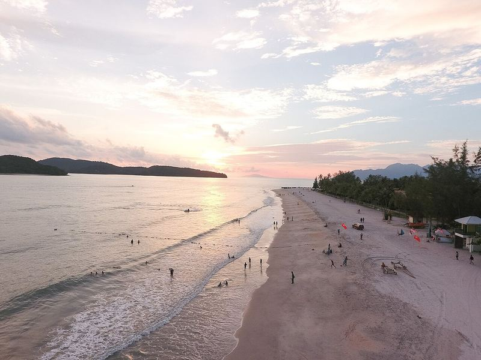
1 月是兰卡威旱季，海滩比亚庇稳定。这次没选的原因：兰卡威和亚庇之间没有直飞（要经吉隆坡转机），三地都去要坐 5–6 段飞机。以后可以单独来一趟“吉隆坡 + 兰卡威”。亮点：珍南海滩日落、Pelangi 等带儿童俱乐部的海边酒店、基林红树林游船（看老鹰）、老鹰广场。
📸 社交媒体热门 · travelbits 博客 · Instagram
兰卡威 Langkawi（本次未选）
兰卡威缆车 · 天空之桥
Oriental Village, Langkawi · 地图
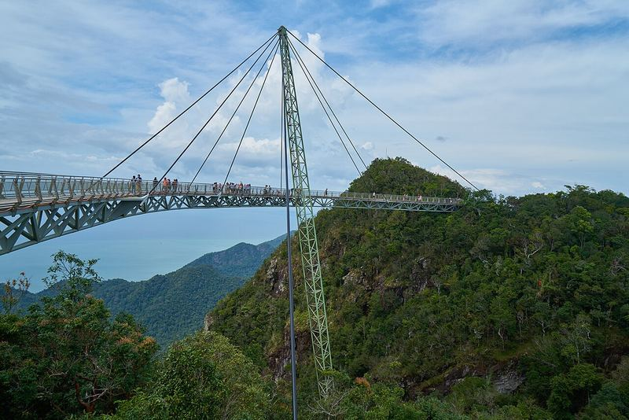
全球最陡的缆车之一，山顶有弧形吊桥。注意：官网运营日历显示每周三是“Weekly Maintenance”，缆车 12:00 才开（其他日子 9:30–18:00）。从山顶站走到天空之桥有很多台阶，带 3 岁孩子建议坐 SkyGlide（另付费，待确认）。
📸 社交媒体热门 · travelbits 博客
马六甲 Melaka（本次未选）
马六甲古城：红屋广场 · 鸡场街 · 河游船
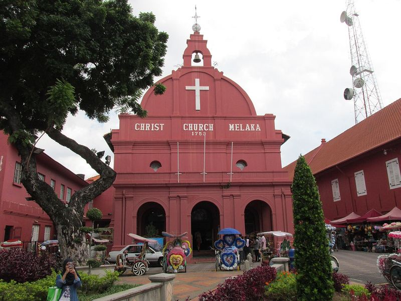
世界遗产古城：荷兰红屋、基督教堂、卡通三轮车、马六甲河游船、鸡场街（夜市只在周五–周日晚上）、海峡清真寺日落。离吉隆坡单程约 2 小时车程，一天往返对 3 岁孩子太累，适合住一晚。这次时间不够，没有安排。
📸 社交媒体热门 · 携程旅拍 · Instagram
吉隆坡 · 拍照
鬼仔巷 Kwai Chai Hong
Lorong Panggung, Kuala Lumpur · 地图
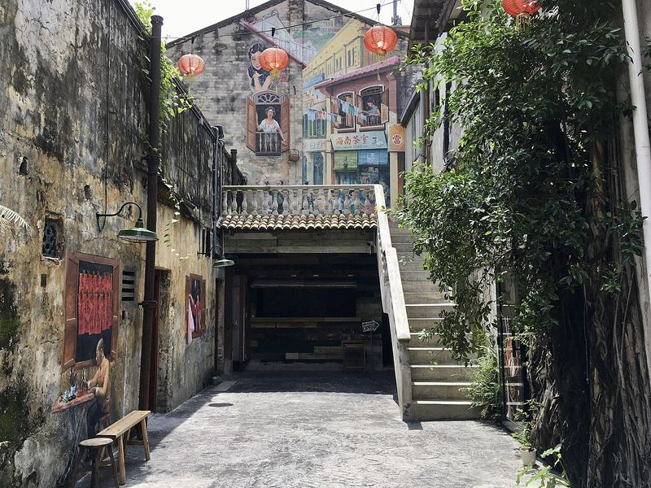
茨厂街旁的怀旧小巷，有壁画、红色小桥和灯笼，免费。工作日一开门（约 9:00）人最少。开放时间博客写约 09:00–24:00，官网写约 09:00–22:00（待确认）。D6 如果订的是 16:00 的航班，上午可以来逛 45 分钟再去机场。
📸 社交媒体热门 · 小红书 / journey.tw / 13blog.tw
吉隆坡 · 拍照
独立广场 · 苏丹阿都沙末大厦
Dataran Merdeka, Kuala Lumpur · 地图
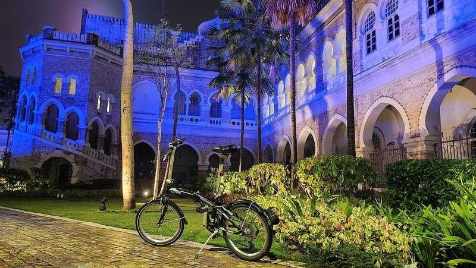
摩尔式风格的红砖钟楼建筑，傍晚亮灯后很好看。机位：从独立广场草坪对面拍整个立面。离鬼仔巷约 1 公里，可以和鬼仔巷一起逛。
📸 社交媒体热门 · 旅游博客常见打卡点
吉隆坡 · 拍照
占美清真寺
Masjid Jamek, Kuala Lumpur · 地图
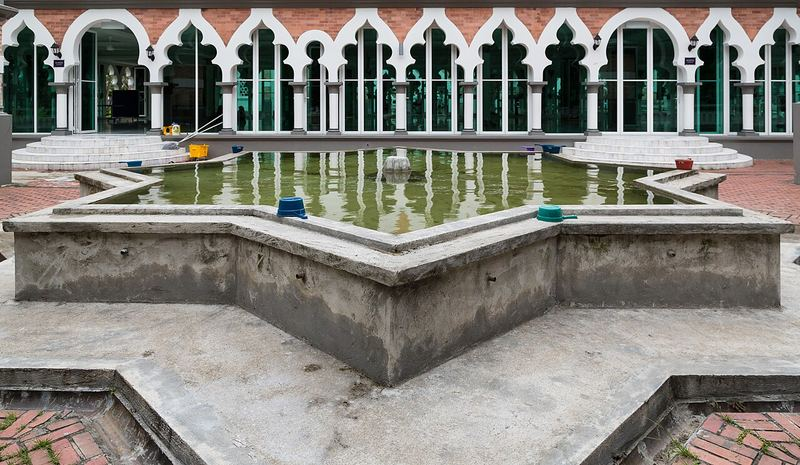
吉隆坡最古老的清真寺之一，位于两条河的交汇处。机位：在对岸的“蓝池 River of Life”步道拍（晚上有蓝色灯光秀，时间待确认）。进寺须遮盖，开放时间待确认。
吉隆坡 · 拍照
茨厂街 Petaling Street
Jalan Petaling, Kuala Lumpur · 地图
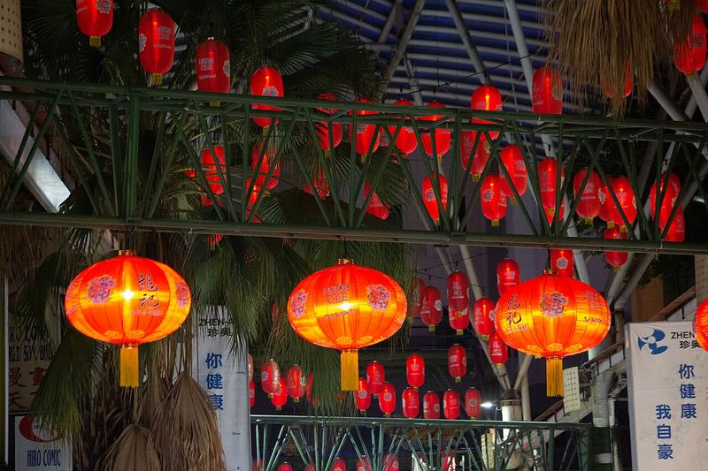
和鬼仔巷相邻的唐人街，头顶挂满红灯笼。晚上最热闹，但人多、地面不平，带推车不太方便。
吉隆坡 · 拍照
天后宫
Thean Hou Temple, Persiaran Endah · 地图
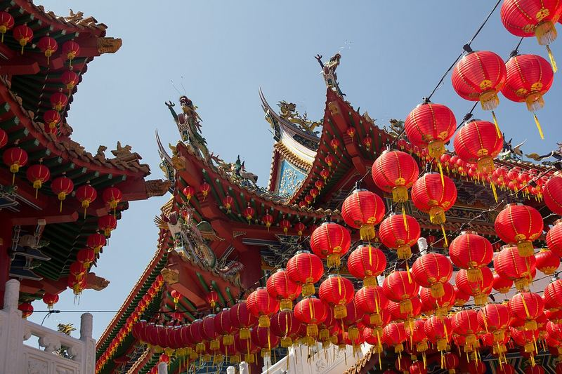
山坡上的华人庙宇，屋顶下挂满红灯笼，是很热门的拍照点。开放时间各来源不一，待确认。春节前（1 月下旬）可能已经挂上新年灯饰（待确认）。离 KLCC 打车约 20 分钟（参考）。
📸 社交媒体热门 · 旅游博客、Instagram 常见
吉隆坡 · 拍照
默迪卡 118 大楼（外观）
Merdeka 118, Kuala Lumpur · 地图
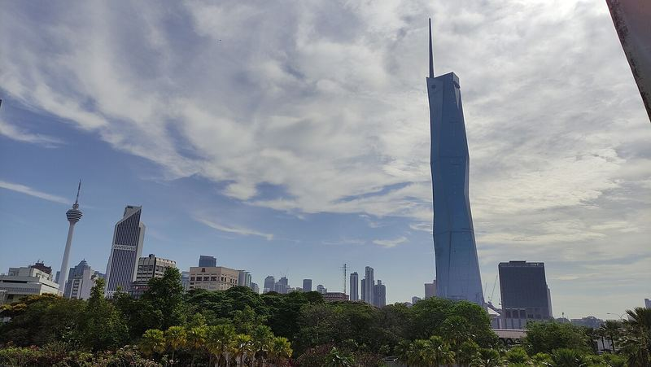
世界第二高楼（678.9 米）。在鬼仔巷和茨厂街一带可以把它和老房子拍在一起（13blog.tw）；观景台是否开放、票价待确认。
吉隆坡 · 夜景（不适合带娃）
Heli Lounge Bar 直升机坪酒吧
Menara KH, Jalan Sultan Ismail · 地图
楼顶直升机停机坪改成的酒吧，可以拍双子塔和吉隆坡塔夜景，社交媒体上很火。酒吧环境、晚上营业，不适合 3 岁孩子；儿童能否进入、营业时间、着装要求都待确认。只放在备选，供大人有机会单独出去时参考。
📸 社交媒体热门 · 网络热门（待确认）
亚庇 · 拍照
信号山观景台
Signal Hill Observatory, Kota Kinabalu · 地图
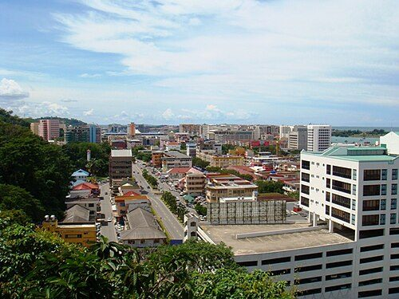
市中心的小山，可以俯瞰亚庇市区和外面的海岛，打车上去几分钟。开放时间待确认。图片尺寸较小（Commons 原图只有 640px）。
亚庇 · 拍照
沙巴州清真寺
Sabah State Mosque, Jalan Tunku Abdul Rahman · 地图
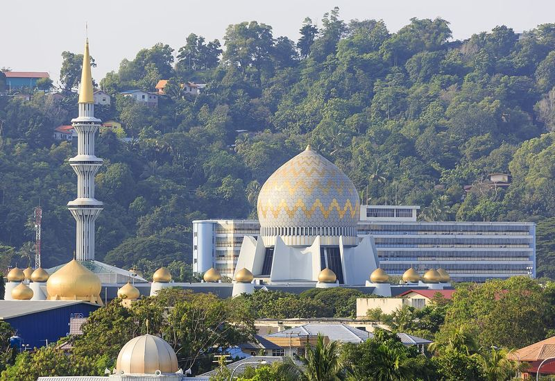
金色圆顶的州立清真寺，在市区去机场的路上。游客能否进入、开放时间待确认；在外面拍金顶即可。
亚庇 · 文化
马里马里文化村
Mari Mari Cultural Village, Inanam · 地图
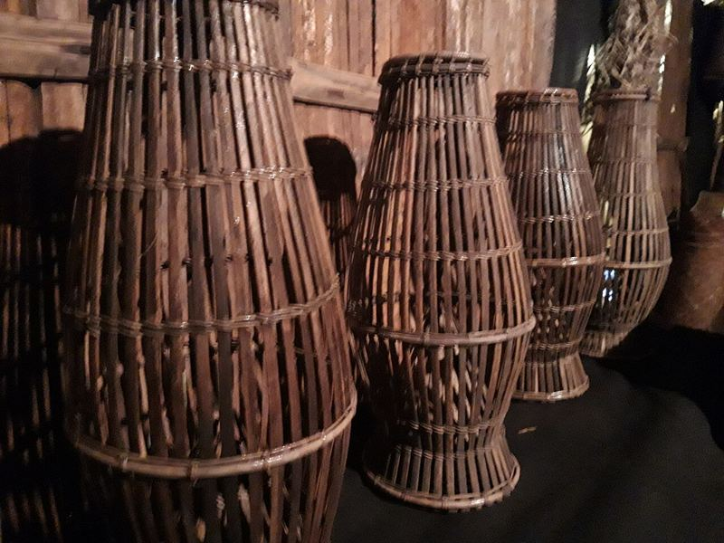
展示沙巴几个原住民族的传统房屋、生火、吹箭、竹舞和小吃，约 3 小时的导览，离市区约 30–40 分钟（参考）。需要预约，场次和票价待确认。也有旅行社把它和 Klias 长鼻猴组合成一日游（约 12.5 小时，Klook），对 3 岁孩子太长。
亚庇 · 酒店
沙巴莎利雅香格里拉 Rasa Ria
Shangri-La Rasa Ria, Pantai Dalit, Tuaran · 地图
亚庇北边的海滩度假酒店，沙滩长、环境更自然，离市区和机场较远（约 40–60 分钟，参考）。儿童设施、价格待查。如果想“整天待在酒店”，可以替代丹绒亚路香格里拉（推荐（未预订）· 价格待查）。
槟城 Penang（本次未选）
槟城：乔治市壁画 · 升旗山 · Entopia 蝴蝶园
乔治市（2008 世界遗产）街头壁画、娘惹/华人美食天堂；升旗山缆轨车（Penang Hill）；Entopia 蝴蝶园（室内外结合，适合小孩）。本次没选的原因：城市暴走+炎热对 3 岁孩子较累，交通拥堵；更适合孩子大一点、以美食为主的行程。
柔佛 Johor
柔佛乐高乐园
LEGOLAND Malaysia Resort, Iskandar Puteri, Johor · 地图
乐高主题乐园 + 水上乐园 + 乐高酒店，最适合 3–12 岁。距吉隆坡约 3.5–4 小时车程（超出单日驾车上限），可作为“吉隆坡+新加坡”行程的一站。开放时间与票价待查。
布城 Putrajaya
布城 · 粉红清真寺
Putra Mosque, Putrajaya · 地图
行政首都，粉红色的布特拉清真寺、湖景。离 KLIA 约 30 分钟，可在 D1 落地后或 D4 去机场前顺路（但会压缩午睡）。进清真寺需遮盖，女士需披袍/头巾（现场提供，参考）。
彭亨 Pahang
云顶高原
Genting Highlands, Pahang · 地图
凉爽山区（约 20 多度），云顶天城缆车、室内外主题乐园。距 KL 约 1 小时山路，周末人多，山路弯多易晕车。
吉隆坡
吉隆坡飞禽公园
KL Bird Park, Jalan Cenderawasih · 地图
大型步入式鸟园，可近距离看犀鸟、孔雀，适合小孩；位于湖滨公园内，可与国家清真寺顺路。开放时间与票价待查。
吉隆坡
石油科学探索中心
Petrosains, Suria KLCC Level 4 · 地图
双子塔商场内的互动科学馆，下雨天的室内备选。票价与闭馆日待确认。
雪兰莪 Selangor
双威水上乐园
Sunway Lagoon, Bandar Sunway · 地图
大型水上+动物主题乐园，离市区约 30–40 分钟；适合想多玩一天的情况。价格待查。
本页照片均来自 Wikimedia Commons，按各自的 CC BY / CC BY-SA / CC0 协议署名，作者和协议标在每张图下方。“看实拍”链接指向小红书 / Instagram 原帖，图片不在本站转存。
尚无任何预订，因此没有预填支出；出行时在此记账（数据保存在本机浏览器）。
马来西亚历史文化
从马六甲海峡的古老港口到热带雨林中的摩天双塔，马来人、华人、印度人与原住民在这里共同生活了几百年。跟着行程，看懂沙巴（婆罗洲）和吉隆坡背后的故事。
内容整理自公开历史资料、马来西亚旅游局及 UNESCO 世界遗产介绍，仅供亲子游参考
📜 马来西亚简史
约公元 5 世纪起
布秧谷与海上贸易古国
马来半岛北部吉打州的布秧谷（Bujang Valley）留有大量印度教—佛教遗址，说明早在一千多年前，这里就是连接印度与中国的海上贸易中转站。
约 1400 年
马六甲王朝建立
相传来自苏门答腊的王子拜里米苏拉（Parameswara）在马六甲建城。马六甲扼守海峡，迅速成为东南亚最繁华的港口，王室后来皈依伊斯兰教。
1405—1433 年
郑和下西洋
明朝郑和船队多次停靠马六甲，马六甲与明朝建立朝贡关系。今天马六甲仍有三宝山、三宝井等与郑和相关的地名和传说。
1511 年
葡萄牙占领马六甲
葡萄牙人攻占马六甲并修建法摩沙城堡（A Famosa），今天只剩下一座城门——圣地亚哥城门。
1641 年
荷兰时代
荷兰东印度公司从葡萄牙手中夺取马六甲，建起红色的总督府（Stadthuys）和基督教堂，形成今天“红屋广场”的样貌。
1786—1826 年
英国与海峡殖民地
1786 年英国人莱特（Francis Light）登陆槟城；1824 年英荷条约后马六甲归英国；1826 年槟城、马六甲、新加坡组成“海峡殖民地”。
1857 年
锡矿与吉隆坡诞生
华人矿工沿巴生河、鹤龙河上溯开采锡矿，在两河交汇处形成聚落，“Kuala Lumpur”意为“泥泞的河口”。华人甲必丹叶亚来对早期吉隆坡建设影响很大。
1941—1945 年
日本占领
二战期间马来亚被日军占领，当地华人等族群遭受严重苦难。
1957 年 8 月 31 日
马来亚独立
马来亚联合邦脱离英国独立（Merdeka），8 月 31 日成为国庆日。
1963 年
马来西亚成立
马来亚与沙巴、砂拉越、新加坡组成马来西亚（9 月 16 日为马来西亚日）；1965 年新加坡独立出去。1974 年中马建交。
1998 年—今
现代马来西亚
1998 年双子塔落成（至 2004 年为世界最高建筑）、吉隆坡国际机场启用；2008 年马六甲与槟城乔治市一起列入世界文化遗产；2025 年中马互免签证协定生效。
国油双峰塔 PETRONAS Twin Towers
1998 年落成
高约 452 米、88 层，由美国建筑师西萨·佩里设计，平面取自伊斯兰八角星图案。两座塔分别由日本和韩国建筑公司承建，41–42 层之间的双层天桥（Skybridge）把两塔连在一起。
世界最高双塔D5 可参观
💡 1998–2004 年间是世界最高建筑，之后被台北 101 超越。
📍 行程 D5
双子塔脚下约 50 英亩的城市公园，由巴西景观设计师 Roberto Burle Marx 设计，保留了大量原生树木，有儿童戏水池、游乐场和慢跑道。
免费亲子友好
📍 行程 D5
“风下之地” Land Below the Wind
沙巴的别称
沙巴在婆罗洲（加里曼丹岛）北部，位于台风带的南边，很少受台风影响，所以被称为“风下之地”。婆罗洲是世界第三大岛，由马来西亚（沙巴、砂拉越）、文莱和印度尼西亚三国共有。
婆罗洲世界第三大岛
亚庇的由来 Jesselton → Kota Kinabalu
1968 年改名
亚庇在英属北婆罗洲公司时期叫 Jesselton（以公司副主席 Charles Jessel 命名），1968 年改名为 Kota Kinabalu，意思是“京那巴鲁山之城”。华人习惯叫它“亚庇”。今天去海岛的码头还叫 Jesselton Point。
Jesselton PointD3 坐船
📍 行程 D3
1963 年加入马来西亚 Sabah & Malaysia
有自己的出入境管理
1963 年沙巴和砂拉越、新加坡一起与马来亚组成马来西亚。加入时沙巴保留了一些自治权，其中之一就是自己管理出入境，所以外国游客从吉隆坡飞沙巴、从沙巴飞吉隆坡，都要查护照。
带护照
💡 护照上会有单独的沙巴入境章。
📍 行程 D1、D4
京那巴鲁山与长鼻猴 Mount Kinabalu · Proboscis Monkey
世界自然遗产
京那巴鲁山（神山）海拔约 4,095 米，是马来西亚最高峰，所在的京那巴鲁公园 2000 年列入 UNESCO 世界自然遗产。长鼻猴只生活在婆罗洲，公猴有个大鼻子，常在河边红树林里活动，Klias 河游船就是去看它们。
神山婆罗洲特有
📍 D2 可选 Klias 河
卡达山杜顺族与丰收节 Kadazan-Dusun · Kaamatan
沙巴最大原住民族群
沙巴有 30 多个原住民族群，卡达山杜顺族人数最多，每年 5 月庆祝丰收节（Kaamatan）。马里马里文化村可以看到他们和其他族群的传统房屋、竹舞和吹箭。
原住民文化
📍 备选：马里马里文化村
亚庇水上清真寺 Kota Kinabalu City Mosque
2000 年启用
建在利卡士湾边的人工湖上，蓝色圆顶，水面平静时像漂浮在湖上，所以叫“水上清真寺”（据维基百科，1989 年动工、2000 年启用）。
拍照点
📍 行程 D4
马六甲古城 Melaka
UNESCO 世界文化遗产（2008）
约 1400 年建城的海峡港口，先后被葡萄牙（1511）、荷兰（1641）、英国统治，留下红屋广场、圣地亚哥城门和鸡场街。2008 年和槟城乔治市一起列入世界文化遗产。
备选景点
兰卡威 Langkawi
UNESCO 世界地质公园（2007）
一种流行说法是名字来自马来语 helang（老鹰）+ kawi（红褐色）。2007 年成为东南亚第一个 UNESCO 世界地质公园，基林红树林是其中的核心景区。
备选景点
三大族群 Malay · Chinese · Indian
多元社会
马来西亚约有一半以上人口为马来人（多为穆斯林，伊斯兰教为联邦宗教），华人约占两成多，印度裔不到一成，东马还有众多原住民族群。国语是马来语，但英语普及，华人之间通用华语、粤语、闽南语、客家话等。
马来语英语华语
开斋节（Hari Raya）、农历新年、屠妖节（Deepavali）、大宝森节、圣诞节都是公共假期。各族群会在节日“开放门户”（Open House）招待朋友和邻居，是马来西亚独特的传统。
Open House
马来西亚避雷指南
马来西亚华人多、说中文很方便，但它是一个以伊斯兰教为主的多元国家。了解这些差异，带娃出行更顺利。
🚨 中国游客最常踩的 10 个坑
| ❌ 不填 MDAC 就出发 | ✅ 抵达前 3 天内，3 个人（含跳跳）各填一份，官网免费 |
| ❌ 穿短裤吊带进清真寺 | ✅ 遮肩过膝，女士进清真寺需包头（现场常可借袍） |
| ❌ 用左手递东西、用食指指人 | ✅ 用右手或双手递物，指方向用大拇指 |
| ❌ 在马来餐厅要猪肉/带猪肉制品 | ✅ 尊重清真（Halal），猪肉去华人餐馆吃 |
| ❌ 拿着中国驾照直接租车 | ✅ 中国不签发 IDP，合规性存疑，本次不自驾，用 Grab/包车 |
| ❌ 以为飞沙巴是国内航班，不带护照 | ✅ 进出沙巴都要查护照（沙巴自己管理出入境），护照随身带 |
| ❌ 下午才坐船去海岛 | ✅ 1 月亚庇午后多雷阵雨、风浪大，海岛安排在上午；中午回酒店午睡 |
| ❌ 忽视蚊子 | ✅ 登革热由白天叮人的伊蚊传播，全天涂儿童驱蚊液 |
| ❌ 把榴莲带进酒店/飞机 | ✅ 大部分酒店和公共交通禁止携带榴莲 |
| ❌ 带国内两孔/三孔插头 | ✅ 马来西亚用英标三方孔（Type G），带转换插头 |
高危 每个人都要提前填 MDAC 数字入境卡
自 2024 年起所有外国旅客（新加坡公民等少数除外）必须在抵达前 3 天（72 小时）内在马来西亚移民局官网 imigresen-online.imi.gov.my 提交 MDAC（Malaysia Digital Arrival Card），免费，不能提前太多，也不能落地再补。儿童也要单独填一份。建议 1/21 晚上一起填好，截图保存。
🇨🇳 中国习惯过去很多国家落地填纸质入境卡
🇲🇾 马来西亚必须提前在线填，落地不能补，第三方收费网站不是官方
高危 飞沙巴也要过边检，护照随身带
沙巴和砂拉越有自己的出入境管理。外国游客即使从吉隆坡坐国内航班去沙巴，或者从沙巴飞回吉隆坡，也要出示护照、过边检（美国国务院马来西亚旅行须知、sabahguide.com、马来西亚移民局国内旅行说明）。护照上会盖沙巴入境章，写有允许停留的期限。本行程是从上海直飞亚庇（国际入境），D4 从亚庇飞吉隆坡时要在亚庇机场再查一次护照。
🇨🇳 中国习惯国内航班带身份证就行
🇲🇾 马来西亚进出沙巴、砂拉越都要查护照
好消息 中国护照免签 30 天
《中马互免签证协定》2025 年 7 月 17 日生效：持中国普通护照（有效期不少于 6 个月）可免签入境，单次停留不超过 30 天，每 180 天累计不超过 90 天，限旅游探亲等目的（中国驻马来西亚大使馆 FAQ）。建议随身带返程机票和酒店预订单备查。
了解 自助通关（Autogate）
马来西亚移民局 2024 年起向 63 个国家/地区开放自助通道，名单中包括中国大陆（Fragomen 2024-06 通报）。但首次入境、儿童可能仍需走人工柜台，以现场指引为准（待确认）。
注意 毒品与违禁品
马来西亚对毒品犯罪处罚极重（含死刑），不要帮陌生人带任何东西。儿童常用药建议带原包装和说明书。
高危 防晒防中暑
马来西亚常年 30°C 左右、紫外线极强。10:00–16:00 尽量待在室内或阴凉处，出门戴宽檐帽、穿防晒衣、涂 SPF50 儿童防晒，随身带水。行程已把每天 13:00–15:00 留作午睡。
🇨🇳 中国习惯1 月上海冬天，孩子户外不怕晒
🇲🇾 马来西亚终年盛夏，紫外线强；阴天也会晒伤
高危 防蚊：登革热
马来西亚是登革热流行区，传播它的伊蚊白天也叮人。给跳跳用适合儿童的驱蚊液（派卡瑞丁 Picaridin 或低浓度避蚊胺 DEET，按说明书年龄使用），穿浅色长袖长裤去红树林和公园。如出现高烧、皮疹，及时就医并告知医生去过的地方。
注意 儿童安全座椅
马来西亚 2020 年起要求私家车使用儿童安全座椅（出租车/网约车执行情况不一，待确认）。Grab 新推出的 Kid-Friendly Rides（测试版）只提供增高垫、适用 4–12 岁、仅限 KLIA 接送机，跳跳 3 岁不适用。建议：①包车时下单备注儿童座椅；②或自带轻便旅行座椅。
注意 推车友好度
KLCC 商场、水族馆、机场、度假酒店推车很友好；加雅街周日集市（人挤）、海岛码头和船上、沙滩不适合推车。建议带一辆可登机的轻便推车 + 一个背带。
高危 海岛与海上安全（D3）
坐快艇和在海里玩时，跳跳全程穿儿童救生衣（出发前问船公司有没有 3 岁尺码，没有就自带）。只在有救生员/指定区域下水，别让孩子离开大人一臂距离。1 月东北季风尾巴，风浪大时船会停开，听码头安排，不要找私人小船冒险出海。海蜇：tripbase 给亚庇海岛的水母风险打分较低（3/10），但仍要留意海滩告示，被蜇后上岸找工作人员处理。不要踩珊瑚、海胆；岛上的巨蜥和猴子不要喂。
🇨🇳 中国习惯海边浴场有统一管理
🇲🇾 马来西亚海岛设施简单，安全要靠自己；环保费只能刷卡
了解 冷气房 vs 室外
商场、餐厅、车上冷气非常足，室内外温差大，容易感冒。随身带一件薄长袖外套和小毯子。
了解 吃饭与儿童餐
很多餐厅可以要儿童椅（baby chair）。马来菜、娘惹菜偏辣，点菜说 “No chili / 不要辣”。酒店和商场常有意面、炒饭、鸡块等儿童友好选项。自来水不要直接喝，喝瓶装水。
好消息 没有时差，作息不乱
马来西亚与北京时间相同（UTC+8）。上海→亚庇约 4–4.5 小时，吉隆坡→上海约 5.5 小时，跳跳的午睡和晚睡时间可以照常。
高危 清真寺与寺庙着装
进清真寺须遮肩过膝，女士需包住头发，脱鞋入内；很多清真寺游客入口会借出长袍和头巾（参考）。礼拜时间尤其周五中午（主麻日）通常不接待游客。印度教寺庙也要求遮肩过膝。
🇨🇳 中国习惯参观寺庙着装相对宽松
🇲🇾 马来西亚宗教场所着装要求严格，不合格不让进
注意 左手与手势
在马来人和印度人文化中，左手被视为不洁，递东西、给钱、吃东西都用右手或双手。不要用食指指人或指物，用右手大拇指（四指握拢）指方向更礼貌。
注意 别随便摸别人的头
在当地文化中头部被视为神圣，不要随意摸当地小朋友的头；同理，如果有人热情地想摸跳跳，也可以礼貌婉拒。
了解 公共场合
在公共场合避免过于亲密的举动；穆斯林女性一般不与异性握手，对方不主动伸手就点头微笑即可。
注意 清真（Halal）与猪肉
马来餐厅和大部分连锁快餐是清真的，不供应猪肉和酒，也不要把猪肉制品带进去。想吃肉骨茶、叉烧就去华人餐馆（通常挂“Non-Halal”标识）。
🇨🇳 中国习惯饭店默认什么都有
🇲🇾 马来西亚餐厅分清真/非清真，互不混用
注意 榴莲禁令
大多数酒店、公共交通（包括飞机）禁止带入榴莲，违者可能被罚款。想吃就在摊位现场吃完。
了解 辣度与口味
马来菜、娘惹菜、印度菜普遍辣、香料重。推荐适合孩子的：海南鸡饭、炒粿条（去辣）、亚庇的海鲜面和清蒸鱼、印度煎饼 Roti Canai、椰浆饭（辣酱另放）。
好消息 中文点菜无压力
吉隆坡、亚庇的华人餐馆基本都能用中文点菜（亚庇华人多讲客家话），粤语、闽南语也很通用。
高危 靠左行驶 · 本次不自驾
马来西亚靠左行驶，右舵车。外国人自驾一般需要本国驾照 + 国际驾照（IDP）；中国不是《日内瓦/维也纳道路交通公约》签约国，无法签发 IDP，仅凭中国驾照或翻译件租车的合规性和保险理赔都存疑（待确认）。带着 3 岁孩子，本行程不安排自驾，全部用 Grab 或包车。
🇨🇳 中国习惯靠右行驶，左舵车
🇲🇾 马来西亚靠左行驶；过马路先看右边
注意 打车用 Grab
Grab 是马来西亚最主流的打车软件（吉隆坡、亚庇均可用），价格透明，可绑定国内信用卡。带行李和推车叫 6 座车。尽量不要在路边拦出租车或接受机场揽客。
了解 过马路
车辆靠左，过马路先看右边；摩托车很多且常穿行，牵好孩子。
了解 货币：林吉特 MYR（RM）
商场、酒店、连锁餐厅普遍可刷 Visa/Mastercard；夜市、小摊、三轮车需要现金。机场只换少量应急。部分商户支持支付宝/微信（覆盖程度待确认）。页面顶部显示实时汇率。
注意 旅游税 + 服务费
外国旅客住宿需交旅游税 RM10/间/晚（预订时或入住时收取）。餐厅账单常另加服务费和销售与服务税（SST），看清菜单上的 “++”。小费不是强制的。
了解 电话卡与 eSIM
机场到达层有运营商柜台可买旅游卡，也可出发前购买 eSIM。马来西亚网络可正常使用 Google Maps 与 Grab。
了解 插头与电压
英标三方孔插座（Type G），220–240V。国内充电器一般支持宽电压，只需带英标转换插头。
注意 马来西亚的农历新年
马来西亚也过农历新年，而且是全国公共假期：2027 年春节为 2 月 6 日（周六）、2 月 7 日（周日），部分州或有补假（以官方公布为准，待确认）。节前几周吉隆坡（茨厂街、各大商场）、槟城（极乐寺点灯）、亚庇（加雅街）张灯结彩、有舞狮，非常有年味。但要注意：很多华人经营的店铺、茶餐厅、小贩会在初一至初三（甚至更久）关门；酒店、机票和包车价格上涨，中国出境游高峰与当地返乡潮叠加。
🇨🇳 中国习惯春节是国内出境游最高峰
🇲🇾 马来西亚当地也放假，华人店铺集体歇业，热门地酒店涨价
好消息 本次日期已避开春节高峰
我们选的是 2027 年 1 月 23 日（周六）— 1 月 28 日（周四）：上海市教委《2026 学年校历》规定寒假 1 月 23 日开始，出发日正好是放假第一天，返程距除夕（2 月 5 日）还有一周多，避开了春节前后的国内出境高峰和马来西亚春节歇业期。商场里已经有新年装饰和年货，能感受到节日气氛。
了解 大宝森节 Thaipusam（1 月 22 日）
2027 年大宝森节在 1 月 22 日（周五），吉隆坡、雪兰莪、槟城等地放假（马来西亚雇主联合会 2027 年假期表）。我们 1/23 到的是亚庇，1/26 才到吉隆坡，影响不大；黑风洞不在本次行程中。
了解 其他日期提醒
2 月 1 日是联邦直辖区日（吉隆坡放假）；2027 年斋月预计 2 月上旬开始（以官方为准），都在我们行程之后。
注意 天气：亚庇 1 月不是旱季
亚庇（沙巴西海岸）11 月到 2 月比较湿，1 月是东北季风的尾巴：常有午后雷阵雨，南中国海风浪变大，去海岛的船偶尔停开（malaysiajourneys.com、citympvtravel.com；timeanddate 1 月平均降水约 155 mm）。上午通常比较好，所以户外和海岛都放上午。吉隆坡 1 月相对干一些，但也可能下午下雨。带折叠伞和儿童雨衣。
好消息 说中文很方便
马来西亚华人多，吉隆坡、亚庇购物吃饭基本可以用中文沟通；英语也普及。
了解 亚庇的手信
加雅街周日集市和菲律宾手工艺市场有沙巴手工串珠、竹编、贝壳工艺品等，可以砍价；吉隆坡商场适合买白咖啡、巧克力。注意不要买珊瑚、贝壳类保护物种制品。
信息来源：中国驻马来西亚大使馆《中马互免签证协定》FAQ、马来西亚移民局 MDAC 与国内旅行说明、美国国务院马来西亚旅行须知、sabahguide.com、沙巴旅游局、沙巴公园官网（东姑阿都拉曼公园收费）、Jesselton Point 官网、MySabah.com、丹绒亚路香格里拉官网、PETRONAS 双子塔官网、Panorama Langkawi 官网、上海市教委《上海市中小学2026学年校历》、马来西亚雇主联合会 2027 年公共假期表、携程国际机票时刻表、Roame 航线数据、《东方日报》、Grab 马来西亚新闻稿，以及 Trip.com、Klook、各旅行社与旅游博客（核实于 2026 年 9–10 月）。
标注“参考 / 待确认 / 价格待查”的内容请出行前再次核实。本手册中所有机票、酒店、包车均未预订。